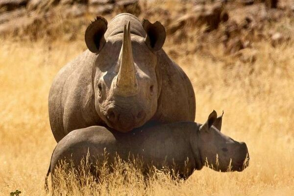
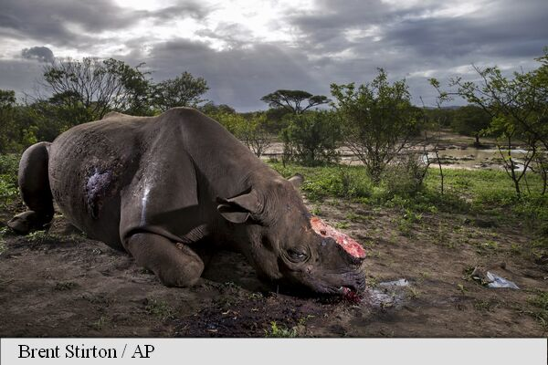
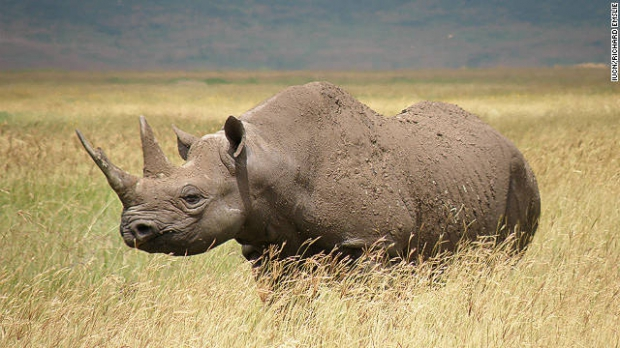

Durata de viata: Pana la 50 de ani
Unde traieste (mediu de viata): Savane ,pasuri
Dieta: Ierbivor
Clasa: Mamifere
Nume stiintific: Rhinocerotidae
Ce mananca (mancarea principala): Iarba, fructe, frunze
Predatori: Feline, oameni
In 2009, braconajul a atins nivelul cel mai mare din ultimii 15 ani, iar in 2010, situatia a fost si mai grava. Fenomenul se datoreaza in cea mai mare parte grupurilor de crima organizata ce cauta sa satisfaca cererea de pe pietele asiatice, unde coarnele de rinocer se vand cu 60.000 de dolari kilogramul, in conditiile in care fiecare corn cantareste intre trei si patru kilograme.
Braconajul echivaleaza cu disparitia a doi rinoceri in fiecare zi. Cele doua specii afectate sunt rinocerul alb, care este aproape amenintata cu disparitia, numarand 17.500 de exemplare in viata, si rinocerul negru, care este deja in pericol de extinctie, din cauza numarului foarte mic de exemplare ce se gaseste in libertate, 4.000 mai exact.
Si alte specii de rinoceri sunt vanate: cei asiatici si cei indieni, insa nu in aceeasi masura ca rinocerii africani. Anul trecut, un sfert dintre rinocerii din Zimbabwe au fost ucisi, iar ultima femela din specia rinocerilor albi dintr-o rezervatie din sudul Africii a fost omorata la inceputul acestui an.
Desi s-au inregistrat succese in prinderea braconierilor in ultima perioada, acest fenomen nu poate fi oprit decat prin educarea oamenilor si explicarea catre cumparatori ca aceste coarne nu sunt utile din punct de vedere medical si dauneaza mediului.
Vanatorii europeni sunt responsabili pentru declinul precoce al populatiilor de rinocer negru. Era ceva obisnuit ca cinci sau sase rinoceri sa fie ucisi intr-o singura zi pentru hrana sau pur si simplu pentru amuzament. Colonistii europeni care au sosit in Africa in secolul al 20-lea pentru a coloniza si a crea ferme si plantatii au continuat macelul fara sens. Cei mai multi oameni considerau rinocerii drept paraziti si i-au exterminat cu orice pret.
Rinocerii sunt unul dintre cele mai vechi grupuri de mamifere, practic niste fosile vii. Ei joaca un rol important in habitatele lor si, in tari precum Namibia, sunt o sursa importanta de venit din ecoturism. Protejarea rinocerilor negri duce la crearea de spatii mari de teren in scopuri de conservare. De acest lucru beneficiaza multe alte specii, inclusiv elefantii.
Comertul ilegal cu animale salbatice si pierderea habitatului sunt principalele amenintari din prezent pentru populatia de rinoceri .
Acestia au doua coarne si, uneori, un al treilea corn posterior mic. Cornul frontal este mai lung decat cel din spate, care ii face tinte profitabile pentru comertul ilegal cu corn de rinocer. Intre anii 1970 si 1992, 96 % din rinocerii negri ramasi in Africa au fost ucisi. Un val de braconaj pentru corn de rinocer s-a propagat in Kenya si Tanzania, a continuat spre sud, prin Valea Luangwa din Zambia pana la raul Zambezi, si s-a raspandit in Zimbabwe. Instabilitatea politica si razboaiele au impiedicat in mare masura munca de conservare a rinocerilor in Africa, in special in Angola, Rwanda, Somalia si Sudan.
Astazi, rinocerii raman in pericol critic de disparitie din cauza cresterii cererii de corn de rinocer, care a condus la niveluri de braconaj record. O crestere recents a braconajului in Africa de Sud ameninta sa stearga succesul de conservare de pana acum. Cresterea este determinata de o cerere tot mai mare din partea unor consumatori din Asia, in special din Vietnam, pentru remedii populare care contin corn de rinocer. In 2014, un numar total de 1.215 de rinoceri au fost braconati in Africa de Sud - o crestere de 21 % fata de anul precedent.
Schimbarile de habitat au contribuit la un declin al populatiei de rinocer , dar aceasta este o amenintare secundara in comparatie cu braconajul. In sudul Zimbabwe, parcuri de conservare a rinocerilor aflate in proprietate privata au fost invadate de oameni fara pamant. Acest lucru reduce suprafata de habitat sigur pentru doua populatii mari de rinocer negru si creste riscul de braconaj si instalarea de capcane.
WWF a lansat un efort international pentru a salva fauna salbatica, in 1961, salvand rinocerii negri, printre multe alte specii, aflate in pragul disparitiei. Eforturile de conservare au ajutat ca numarul total de rinoceri negri sa creasca de la 2.410 in 1995 la 4.880 in 2010. Organizatia lucreaza pentru a opri braconajul, a creste populatiile de rinoceri, pentru a imbunatati aplicarea legii si a combate comertul ilegal cu coarne de rinocer.
Curiozitati:
- Exista 5 tipuri de rinoceri.
- Numele deriva de la cuvintele grecesti Rhino (nas) si Ceros (corn).
- Rinocerul Alb este al 2-lea cel mai mare mamifer (dupa elefant) care poate cantari si 3500 kg.
- Coarnele rinocerilor sunt din keratina (proteina din unghiile si parul nostru).
- In lupta, unii rinoceri folosesc si dintii foarte ascutiti, nu doar cornul.
- Cele mai apropiate "rude" ale rinocerilor sunt tapirii , caii si zebrele.
- Desi sunt animale mari greoaie, pot alerga si cu 48-60 km/h. 
- Perioada de gestatie dureaza 15-16 luni, in urma careia se naste un singur pui.
- Puii se pot deplasa la 10 minute de la nastere
- Au vazul destul de slab dezvoltat, insa auzul si mirosul sunt bine dezvoltate.
- Pudra din corn de rinocer este folosita in medicina asiatica pentru a reduce febra.
- Este in general un animal solitar, fiind activ mai mult noaptea.
- Desi pielea lor este destul de groasa, este in acelasi timp sensibila la arsuri solare si la intepaturi de insecte; pentru a se proteja se tavalesc in noroi care actioneaza ca o crema de protectie.
- Are nevoie sa bea apa cel putin o data pe zi, de aceea de obicei sta la distanta de maxim 5 km de apa.
- Cel mai mare pradator al rinocerului este omul, care il vaneaza pentru cornul sau folosit ca ornament sau in medicina.
- Multor rinoceri li s-a indepartat cornul pentru a nu mai atrage braconierii. Totusi, cornul se regenereaza.
- Cel mai lung corn de rinocer masurat vreodata a avut 1.5 m lungime.
- Rinocerul are a doua cea mai lunga perioada de gestatie din lumea animala: 15-16 luni; pe primul loc se afla elefantul, cu o perioada de pana la 2 ani.